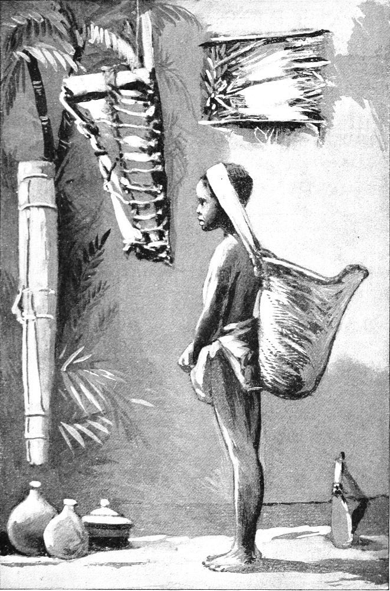
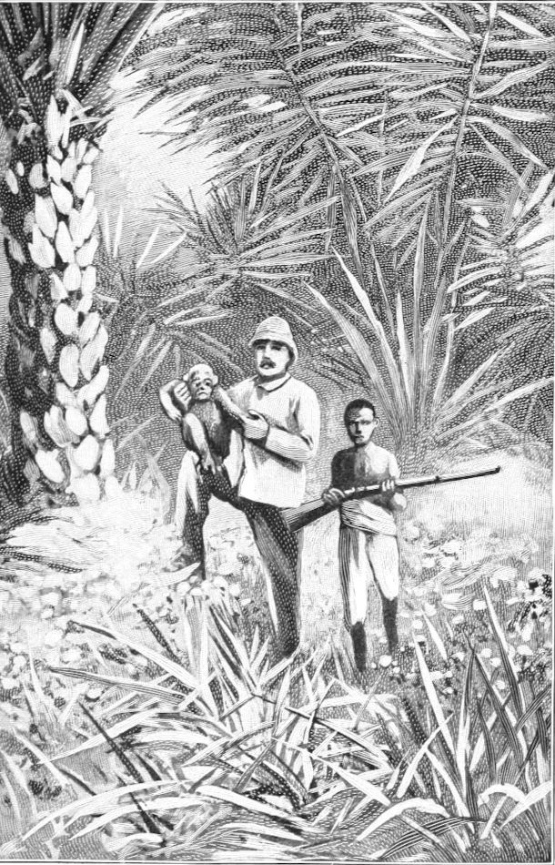

Moses—His Capture—His Character—His Affections—His Food—His Daily Life—Anecdotes of Him
During my sojourn in the forest I had a fine young chimpanzee, which was of ordinary intelligence, and he was of more than ordinary interest, because of his history. I gave him the name Moses,—not in derision of the historic Israelite of that name, but owing to the circumstances of his capture and his life. He was found all alone in a wild papyrus swamp of the Ogowé River. No one knew who his parents were. The low bush in which he was crouched when discovered was surrounded by water, and thus the poor little waif was cut off from the adjacent dry land. As the native approached to capture him, the timid little ape tried to climb up among the vines above him and escape; but the agile hunter seized him. At first the chimpanzee screamed and struggled to get away, because he had perhaps never before seen a man; but when he found that he was not going to be hurt, he put his frail arms around his captor and clung to him as a friend. Indeed, he seemed glad to be rescued from such a dreary place, even by such a strange creature as a man. For a moment the man feared that the cries of his young prisoner might call its mother to the rescue, and possibly a band of others; but if she heard, she did not respond; so he tied the baby captive with a thong of bark, put him into a canoe, and brought him away to the village. There he supplied him with food and made him quite cosy. The next day he was sold to a trader. About this time I passed up the river on my way to the jungle in search of the gorilla and other apes. Stopping at the station of the trader, I bought the young chimpanzee and took him along with me. We soon became the best of friends and constant companions.
It was supposed that the mother chimpanzee had left her babe in the tree while she went off in search of food, and had wandered so far away that she lost her bearings and could not again find him. He appeared to have been for a long time without food, and may have been crouching there in the forks of that tree for a day or two; but this was only inferred from his hunger, as there was no way to determine how long he had remained, or even how he got there.
I designed to bring Moses up in the way that good chimpanzees ought to be brought up; so I began to teach him good manners, in the hope that some day he would be a shining light to his race, and aid me in my work among them. To that end I took great care of him, and devoted much time to the study of his natural manners, and to improving them as much as his nature would allow.
I built him a neat little house within a few feet of my cage. It was enclosed with a thin cloth, and at the door I hung a curtain to keep out mosquitoes and other insects. It was supplied with plenty of soft, clean leaves, and some canvas bed-clothing. It was covered over with a bamboo roof, and was suspended a few feet from the ground, so as to keep out the ants.
Moses soon learned to adjust the curtain and go to bed without my aid. He would lie in bed in the morning until he heard me or the boy stirring about the cage, when he would poke his little black head out and begin to jabber for his breakfast. Then he would climb out and come to the cage to see what was going on. He was not confined at all, but quite at liberty to go about in the forest, climb the trees and bushes, and have a good time of it. He was jealous of the boy, and the boy was jealous of him, especially when it came to a question of eating. Neither of them seemed to want the other to eat anything that they mutually liked, and I had to act as umpire in many of their disputes on that grave subject, which seemed to be the central thought of both of them. I frequently allowed Moses to dine with me, and I never knew him to refuse, or to be late in coming, on such occasions; but his table etiquette was not of the best order. I gave him a tin plate and a wooden spoon. He did not like to use the latter, but seemed to think that it was pure affectation for any one to eat with such an awkward thing. He always held it in one hand while he ate with the other or drank his soup out of the plate. It was such a task to get washing done in that part of the world, that I resorted to all means of economy in that matter, and for a tablecloth I used a leaf of newspaper, when I had one. To tear that paper afforded Moses an amount of pleasure that nothing else would, and in this act his conduct was more like that of a naughty child than in anything else he did, When he would first take his place at the table, he would behave in a nice and becoming manner; but having eaten till he was quite satisfied, he usually became rude and saucy. He would slyly put his foot up over the edge of the table, and catch hold of the corner of the paper, meanwhile watching me closely, to see if I was going to scold him. If I remained quiet, he would tear the paper just a little and wait to see the result. If no notice was taken of that, he would tear it a little more, but keep watching my face to see when I observed him. If I raised my finger to him, he quickly let go, drew his foot down, and began to eat. If nothing more was done to stop him, the instant my finger and eyes were dropped, that dexterous foot was back on the table and the mischief was resumed with more audacity than before. When he carried his fun too far, I made him get down from the table and sit on the floor. This humiliation he did not like, at best; but when the boy grinned at him for it, he would resent it with as much temper as if he had been poked with a stick. He certainly was sensitive on this point, and evinced an undoubted dislike to being laughed at.

NATIVE CARRIER BOY (From a Photograph.)
Another habit that Moses had was putting his fingers in the dish to help himself. He had to be watched all the time to prevent this, and seemed unable to grasp any reason why he should not be allowed to do so. He always appeared to think my spoon, knife, and fork were better than his own. On one occasion he persisted in begging for my fork until I gave it to him. He dipped it into his soup, held it up, and looked at it as if disappointed. He again stuck it into his soup. Then he examined it, as if to see how I lifted my food with it. He did not seem to notice that I used it in lifting meat instead of soup. After repeating this three or four times he licked the fork, smelt it, and then deliberately threw it on the floor,—as if to say, “That’s a failure.” He then leaned over and drank his soup from the plate.
The only thing that he cared much to play with was a tin can in which I kept some nails. For this he had a kind of mania. He never tired of trying to remove the lid. When given the hammer and a nail, he knew what they were for, and would set to work to drive the nail into the floor of the cage or into the table; but he hurt his fingers a few times, and after that he stood the nail on its flat head, removed his fingers, and struck it with the hammer; but of course he never succeeded in driving it into anything.
A bunch of sugarcane was kept for Moses to eat when he wanted it. To aid him in tearing the hard shell away from it, I kept a club to bruise it. Sometimes he would go and select a stalk of cane, carry it to the block, take the club in both hands, and try to mash the cane; but as the jar of the stroke often hurt his hands, he learned to avoid this by letting go as the club descended. He never succeeded in crushing the cane, but would continue his efforts until some one came to his aid. At other times he would drag a stalk of the cane to the cage and poke it through the wires, then bring the club and poke it through to get me to mash the cane for him.
From time to time I received newspapers sent me from home. Moses could not understand what induced me to sit holding that thing before me, but he wished to try it and see. He would take a leaf of it, and hold it up before him with both hands, just as he saw me do; but instead of looking at the paper, he kept his eyes, most of the time, on me. When I turned my paper over, he did the same thing with his, but half the time it was upside down. He did not appear to care for the pictures, or notice them, except a few times he tried to pick them off the paper. One large cut of a dog’s head, when held at a short distance from him, he appeared to regard with a little interest, as if he recognized it as that of an animal of some kind; but I cannot say just what his ideas concerning it really were.
Chimpanzees are not usually so playful or so funny as monkeys, but they have a certain degree of mirth in their nature, and at times display a marked sense of humor. Moses was fond of playing peek-a-boo. He did not try to conceal his body from view, but put his head behind a box or something to hide his eyes. Then he would cautiously peep at me. He would often put his head behind one of the large tin boxes in the cage, leaving his whole body visible. In this attitude he would utter a peculiar sound, then draw his head out and look to see if I were watching him. If not, he would repeat the act a few times and then resort to some other means of amusing himself. But if he could gain attention the romp began. He found great pleasure in this simple pastime. He would roll over, kick up his heels, and grin with evident delight. His favorite hour for this sport was in the early part of the afternoon. I spent much time in entertaining him in this way and in many others, feeling amply repaid by the gratification it afforded him. I could not resist his overtures to play, as he was my only companion; and, living in that solitary manner, we found mutual pleasure in such diversions.
Another occasion on which he used to peep at me was when he lay down to take his midday nap. For this I had made him a little hammock. It was suspended by wires hooked in the top of my cage, so as to be removable when not in use. I always hung this near me, so I could swing him to sleep like a child. He liked this very much, and I liked equally well to indulge him in it. When he was laid in this little hammock, he was usually covered up with a small piece of canvas, and in spreading it over him I sometimes laid the edge of it over his eyes. But this caused him to suspect me of having some motive in doing so. Then he would reach his finger up, catch the edge of the cloth and gently draw it down, so as to see what I was doing. If he found that he was detected, he quickly released the cloth, and cuddled down as though he had drawn it down by accident; but the little rogue knew just as well as I did that it was not fair to peep.
I also made him another hammock, which was hung a few yards from the cage. It was intended that he should get into this without bothering me. But he did not seem to care for it, until I brought a young gorilla to live with us in our jungle home. As Moses had never used this hammock, I assigned it to the new member of the household. Whenever the gorilla got into the hammock there was a small row about it. Moses would never allow him to occupy it in peace. He seemed to know that it was his own by right, and the gorilla was regarded as an intruder. He would push and shove the gorilla, grunt and whine and quarrel until he got him out of it. But after doing so he would leave the hammock and climb up into the bushes, or go scouting about, hunting something to eat. He only wanted to dispossess the intruder, for whom he nursed an inordinate jealousy. He never went about the gorilla’s little house, which was near another side of my cage. Even after the gorilla died Moses kept aloof from its house.
As a rule, I took Moses with me in my rambles into the forest, and I found him to be quite useful in one way. His eyes were like the lens of a camera; nothing escaped them. When he discovered anything in the jungle, he always made it known by a peculiar sound. He could not point it out with his finger, but by watching his eyes the object could often be located. Frequently during these tours the ape rode on my shoulders. At other times the boy carried him; but occasionally he was put down on the ground to walk. If we traveled at a very slow pace, and allowed him to stroll along at leisure, he was content to do so; but if hurried beyond a certain gait, he always made a display of temper. He would turn on the boy and attack him if possible; but if the boy escaped, the angry little ape would throw himself down on the ground, scream, kick, and beat the earth with his own head and hands, in the most violent and persistent manner. He sometimes did the same way when not allowed to have what he wanted. His conduct was exactly like that of a spoiled or ugly child.
He had a certain amount of ingenuity, and often evinced a degree of reason which was rather unexpected. It was not a rare thing for him to solve some problem that involved a study of cause and effect, but this was always in a limited degree. I would not be understood to mean that he could work out any abstract problem, such as belongs to the realm of mathematics, but only simple, concrete problems, the object of which was present.
On one occasion while walking through the forest, we came to a small stream of water. The boy and myself stepped across it, leaving Moses to get over without help. He disliked getting his feet wet, and paused to be lifted across. We walked a few steps away and waited. He looked up and down the branch to see if there was any way to avoid it. He walked back and forth a few yards, but found no way to cross. He sat down on the bank and declined to wade. After a few moments he waddled along the bank about ten or twelve feet to a clump of tall, slender bushes growing by the edge of the stream. Here he halted, whined, and looked up thoughtfully into them. At length he began to climb one of them that leaned over the water. As he climbed up, the stalk bent with his weight, and in an instant he was swung safely across the little brook. He let go the plant, and came hobbling along to me with a look of triumph on his face that plainly indicated he was fully conscious of having performed a very clever feat.

A STROLL IN THE JUNGLE—MR. GARNER, MOSES, AND NATIVE BOY
(From a Photograph.)
One dark, rainy night I felt something pulling at my blanket and mosquito bar. I could not for a moment imagine what it was, but knew that it was something on the outside of my cage. I lay for a few seconds, and then I felt another strong pull. In an instant some cold, damp, rough thing touched my face. I found it was his hand poked through the meshes and groping about for something. I spoke to him, and he replied with a series of plaintive sounds which assured me that something must be wrong. I rose and lighted a candle. His little brown face was pressed up against the wires, and wore a sad, weary look. He could not tell me in words what troubled him, but every sign, look, and gesture bespoke trouble. Taking the candle in one hand and my revolver in the other, I stepped out of the cage and went to his domicile. There I discovered that a colony of ants had invaded his quarters. These ants are a great pest when they attack anything, and when they make a raid on a house the only thing to be done is to leave it until they have devoured everything about it that they can eat. When they leave a house there is not a roach, rat, bug, or insect left in it. As the house of Moses was so small, it was not difficult to dispossess the ants by saturating it with kerosene. This was quickly done, and the little occupant was allowed to return and go to bed. He watched the procedure with evident interest, and seemed perfectly aware that I could rid him of his savage assailants. In a wild state he would doubtless have abandoned his claim and fled to some other place, without an attempt to drive the ants away; but in this instance he had acquired the idea of the rights of possession.
Moses was especially fond of corned beef and sardines, and would recognize a can of either as far away as he could see it. He also knew the instrument used in opening the cans. But he did not appear to appreciate the fact that when the contents had once been taken out it was useless to open the can again; so he often brought the empty cans that had been thrown into the bush, got the can-opener down, and wanted me to use it for him! I never saw him try to open a can himself otherwise than with his fingers. Sometimes, when about to prepare my own meals, I would open the case in which I kept stored a supply of canned meats and allow Moses to select a can for the purpose. He never failed to pull out one of the cans of beef bearing the blue label. If I put it back, he would again select the same kind, and he could not be deceived in his choice. It was not accidental, because he would hunt until he found the right sort. I don’t know what he thought when his choice was not served for dinner. I often exchanged it for another kind without consulting him.
I kept my supply of water in a large jug, which was placed in the shade of the bushes near the cage. I also kept a small pan for Moses to drink out of. He would sometimes ask for water by using his own word for it. He would place his pan by the side of the jug and repeat the sound a few times. If he was not attended to, he proceeded to help himself. He could take the cork out of the jug quite as well as I could. He would then put his eye to the mouth of the vessel and look down into it to see if there was any water. Of course the shadow of his head would darken the interior of the jug so that he could not see anything. Then, removing his eye from the mouth of it, he would poke his hand into it. But I reproved him for this until I broke him of the habit. After a careful examination of the jug he would try to pour the water out. He knew how it ought to be done, but was not able to handle the vessel. He always placed the pan on the lower side of the jug; then he leaned the jug towards the pan and let go. He would rarely ever get the water into the pan, but always turned the jug with the neck down grade. As a hydraulic engineer he was not a great success, but he certainly knew the first principles of the science.
I tried to teach Moses to be cleanly, but it was a hard task. He would listen to my precepts as if they had made a deep impression, but he would not wash his hands of his own accord. He would permit me or the boy to wash them, but when it came to taking a bath or even wetting his face, he was a rank heretic on the subject, and no amount of logic would convince him that he needed it. When he was given a bath he would scream and fight during the whole process. When it was finished he would climb upon the roof of the cage and spread himself out in the sun. These were the only occasions on which I ever knew him to get upon the roof. I don’t know why he disliked the bath so much. He did not mind getting wet in the rain, but rather seemed to like that.
He had a great dislike for ants and certain large bugs. Whenever one such came near him he would talk like a magpie, and brush at the insect with his hands until he got rid of it. He always used a certain sound for this kind of annoyance; it differed slightly from those I have described as warning.
Moses tried to be honest, but he was affected with a species of kleptomania and could not resist the temptation to purloin anything that came in his way. The small stove upon which I prepared my food was placed on a shelf in one corner of the cage, about halfway between the floor and the top. Whenever anything was set on the stove to cook, he had to be watched to keep him from climbing up the side of the cage, reaching his arm through the meshes, and stealing the food. He was sometimes very persevering in this matter. One day I set a tin can of water on the stove to heat, in order to make some coffee. He silently climbed up, reached his hand through, stuck it in the can, and began to search for anything it might contain. I threw out the water, refilled the can, and drove him away. In a few minutes he returned and repeated the act. I had a piece of canvas hung up on the outside of the cage to keep him away. The can of water was placed on the stove for the third time, but within a minute he found his way by climbing up under the curtain, and between that and the cage. I determined to teach him a lesson. He was allowed to explore the can, but finding nothing, he withdrew his hand and sat there clinging to the side of the cage. Again he tried, but found nothing. The water was getting warmer, but was still not hot. At length, for the third or fourth time, he stuck his hand in it up to the wrist. By this time the water was so hot that it scalded his hand. It was not severe enough to do him any harm, but quite enough so for a good lesson. He jerked his hand out with such violence that he threw the cup over and spilt the water all over that side of the cage. From that time to the end of his life he always refused anything that had steam or smoke about it. If anything having steam or smoke was offered him at the table, he would climb down at once and retire from the scene. Poor little Moses! I knew beforehand what would happen. I did not wish to see him hurt, but nothing else would serve to impress him with the danger and keep him out of mischief.
Anything that he saw me eat he never failed to beg. No matter what he had himself, he wanted to try everything else that he saw me eat. One thing in which these apes appear to be wiser than man is, that when they eat or drink enough to satisfy their wants they quit. Men sometimes do not. Apes never drink water or anything else during their meal, but having finished eating, they want, as a rule, something to drink. The native custom is the same. I have never known the native African to use any kind of diet drink, but always when he has finished eating he takes a draught of water.
Moses knew the use of nearly all the tools that I carried with me in the jungle. He could not use them for the purpose for which they were intended, and I do not know to what extent he appreciated their use; but he knew quite well the manner of using them. I have mentioned the incident of his using the hammer and nails; but he also knew the way to use the saw; however, he always applied the back of it, because the teeth were too rough; but he gave it the motion. When allowed to have it, he would put the back of it across a stick and saw with the energy of a man on a big salary. When given a file, he would file everything that came in his way. If he had applied himself in learning to talk human words as closely and with as much zeal as he tried to use my pliers, he would have succeeded in a very short time.
Whether these creatures are actuated by reason or by instinct in such acts as I have mentioned, the caviller may settle for himself; but the actions accomplish the purpose of the actors in a logical and practical manner, and they are perfectly conscious of the fact.